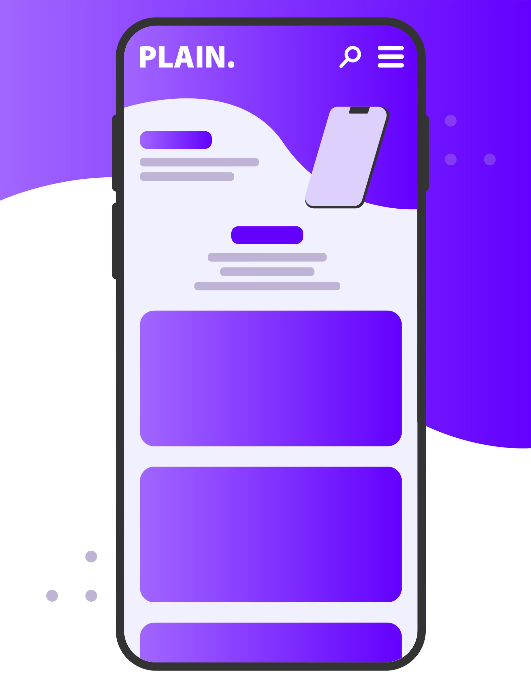

GENTS
Advertisement
GENTS is clothing company that makes there own advertising and branding. There branding consists of a line art in the colors of black and white.
Adding new elements
I had some down time in my intership sinds the advertising for the last sales where done. so i decided to explore some new options and outside the icons we were using for advertising. after exsploring some different directions I ended up making a line illustration of the man in the suit
I can't draw
For making the illustration on the left I found a picture of my boss in our documents and decided to trace this picture. I went and showed him the first sketch of the work and he liked it but called them to "round" not knowing he himself whas behind the bald man in the suit. so I took the second intern and suited him up for the final illustration.